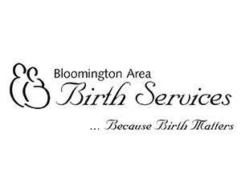
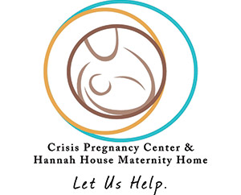

Did you know…

During pregnancy, a mother’s oral health has a direct effect on her pregnancy and the health of her baby?

Babies are not born with the bacteria that cause cavities –they can acquire them though a simple kiss from their mother or caregiver?
Oral health is part of your baby’s overall health?
Even before you see teeth in your baby’s mouth there is important information you should have to help you grow and keep healthy teeth?
The most important age for establishing a healthy mouth for teeth is before your baby’s first birthday?
Why is Smile Baby! important?
At Bloomington Pediatric Dentistry we want to give your family every advantage in the fight against tooth decay. Most parents are not aware that establishing good oral health starts during pregnancy and continues the day your baby is born. Much of the important work in establishing a healthy mouth is done even before you see your baby’s first tooth. Because pregnancy and the early months of your baby’s life are such an important time in the fight against tooth decay, the American Academy of Pediatrics (AAP) and the American Academy of Pediatric Dentistry (AAPD) both recommend expectant parents have prenatal oral health counseling during pregnancy. They also recommend bringing your baby to the pediatric dentist by six months of age for your first visit (even if they don't have any teeth!), and every six months thereafter.
3 Important Lessons
Bloomington Pediatric Dentistry’s Smile Baby! Born to be Cavity Free is a FREE prenatal oral health class offered in both English and Spanish, based upon the recommendations of the AAP and AAPD. This class is designed for both expectant parents and new parents and will cover three important areas:
How the oral health of an expectant mother has an impact on her pregnancy and her child’s oral health; and why it is important and safe for a pregnant woman to see a dentist during pregnancy.
How to care for your baby’s mouth when they are born and up until the time they start teething.
How to care for your baby’s mouth once they have teeth.
Class participants will receive a complimentary oral health kit for both mom and newborn. Please call our office if you have any questions or would like to sign up for one of our classes. It will be one of the best things you did for your family!
Dentists
If you are an expectant mother and you do not see a dentist regularly, please take a look at the list below. These are area dentists that are willing to see expectant moms and work with our Smile Baby! Class.
Dr. Suzanne Allmand (Southern Indiana Smiles)*
Dr. Martin Barco (Create-A-Smile)*
Dr. Steven Bollinger (Ellettsville Dental Center)
Dr. Kevin Coghlan (Coghlan Orthodintics)
Dr. David Compton (Elettsville Dental Center)
Dr. Jill Feitmeyer (Dental Care Center)*
Dr. David Henderson (Henderson Orthodontics)
Dr. Thomas Kapczynsk (Ellettsville Dental Center)
Dr. Ken Moore (Create-A-Smile)*
Dr. Todd Whitlock (Bloomington Cosmetic Dentistry)
* Accepts Medicaid
Refering Organizations
Listed below are some of the area organizations that refer their clients and patients to the Smile Baby! Program:
-
Bloomington Area Birth Services

-
Crisis Pregnancy Center

-
Monroe County WIC Office

-
Hoosier Uplands
Upcoming Classes
- May 14th - 12:15pm
- May 22nd - 5:15pm
- June 11th - 12:15pm
- June 12th - 5:15pm